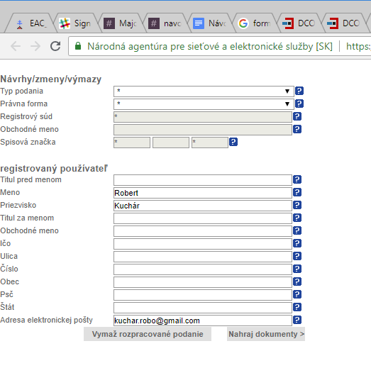

Zoznam podúloh:
Zistite si príslušný súd SR pre podanie vášho návrhu prostredníctvom portálu Ministerstva spravodlivosti SR.
Podanie vykonajte cez elektronickú podateľňu www.slovensko.sk. Vyberte príslušný súd SR.
Prihláste sa cez slovensko.sk. V súčasnosti je možné prihlášiť ako so slovenskám občianským preukazom alebo ako obyvateľ inej krajiny EÚ.
Vyplňte formulár na zakladanie s.r.o.:
Typ podania – vyberte možnosť „Prvozápis“
Právnu formu spoločnosti, ktorú žiadate zapísať – vyberte možnosť „Spoločnosť s ručením obmedzeným“
Registrový súd podľa príslušnosti – vyberte príslušný súd SR pre podanie vášho návrhu
Obchodné meno spoločnosti – zadajte názov zakladanej s. r. o.

{{ govukHint({ "html": " Tip: Pri prvozápise Vám bude Spisová značka pridelená súdom, nevypĺňajte ju.Skontrolujte si celé podanie prostredníctvom voľby „Prehľad podania“.
Odošlite formulár prostredníctvom voľby „Odoslať“.
Skontrolujte, či Vám do elektronickej schránky a na emailovú adresu prišla správa s potvrdenkou o prijatí podania a začatí procesu overovania.